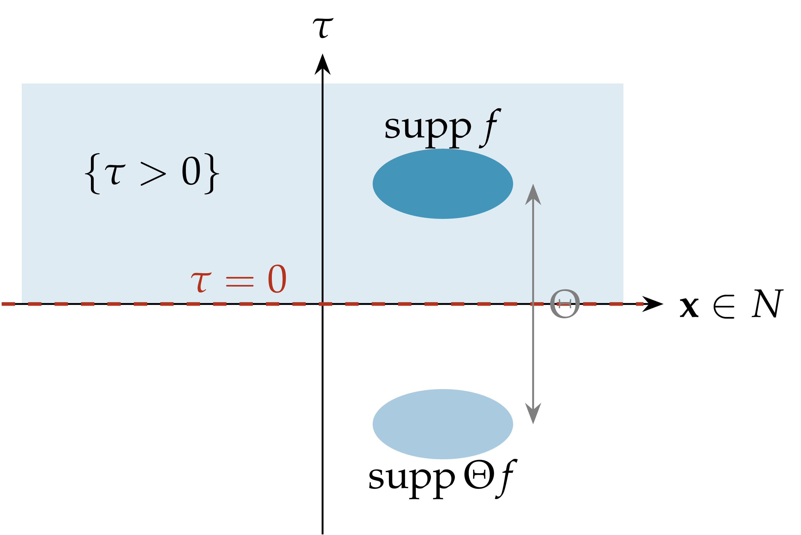
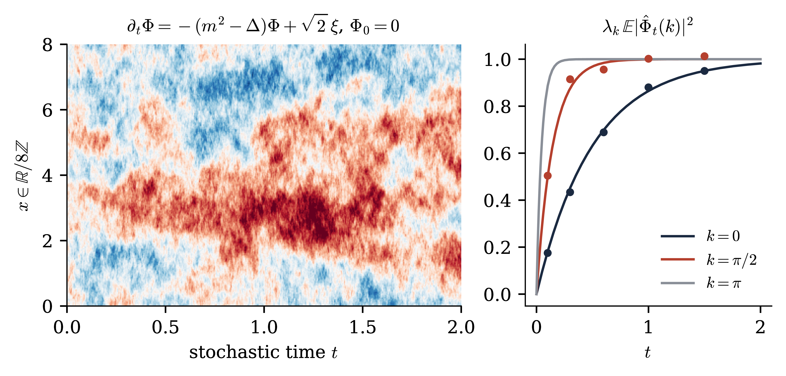

|
Abstract
We study the first example of a Euclidean field theory: the Gaussian free field (GFF) on the torus \(\mathbb{T}^d\) and on \(\mathbb{R}^d\). We construct it, prove reflection positivity and recover the free relativistic field, discuss the Euclidean Källén–Lehmann representation, and define its local (Wick) operators. We prove that the Dyson–Schwinger equation characterises the GFF among probability measures on distributions, and that the GFF is the stationary one-time (resp. one-point) marginal of the parabolic (resp. elliptic) stochastic quantisation equation. Exercises are collected at the end. These notes follow the slides of Lecture 2.
Introduction 1
3The Gaussian free field 2
3.1Definition and construction 2
3.2Reflection positivity and the free field 3
Example: two masses. 6
Is the nonlocal theory physical? 7
3.3Local operators: Wick products 8
Beyond \(L^2\): no random distribution. 9
3.4Gaussian integration by parts and the Dyson–Schwinger equation 10
3.5The GFF as stationary marginal of parabolic stochastic quantisation 12
Langevin dynamics. 12
History. 12
3.6The GFF as one-point marginal of elliptic stochastic quantisation 14
3.7Outlook 15
Exercises 15
References and further reading 17
Guide. 17
In Lecture 1 we saw that, after the passage to imaginary time, a relativistic quantum field is encoded in a probability measure on distributions satisfying the Osterwalder–Schrader axioms, formally \(\mu (\mathrm{d} \varphi) \propto \exp (- \int [\frac{1}{2} | \nabla \varphi |^2 + \frac{1}{2} m^2 \varphi^2 + V (\varphi)]) \mathcal{D} \varphi\) (Eq. (2.13)). In this lecture we treat its Gaussian part rigorously. Conventions are those of Lecture 1. Sections, equations and exercises keep the numbering of the notes, so that §1–2 refer to the notes of Lecture 1.
Throughout, \(\mathcal{M}\) is either the torus \(\mathbb{T}^d_L = (\mathbb{R}/ L\mathbb{Z})^d\) or \(\mathbb{R}^d\), \(d \geq 1\). We write \(\mathcal{S} (\mathcal{M})\) for \(C^{\infty} (\mathbb{T}^d_L)\), resp. the Schwartz space, and \(\mathcal{S}' (\mathcal{M})\) for its dual. We equip \(\mathcal{S}' (\mathcal{M})\) with the \(\sigma\)-algebra generated by the maps \(\varphi \mapsto \varphi (f)\); it coincides with the Borel \(\sigma\)-algebra [GV64, Bog98]. Test functions are real unless stated otherwise. Let \(m > 0\) and
| \(\displaystyle A := m^2 - \Delta, \qquad C := A^{- 1} .\) | (3.1) |
\(C\) is a positive bounded operator on \(L^2 (\mathcal{M})\) with \(\|C\| \leq m^{- 2}\). Both \(A\) and \(C\) are continuous bijections of \(\mathcal{S} (\mathcal{M})\), being Fourier multipliers by \((|k|^2 + m^2)^{\pm 1}\).
Definition
equivalently \(\int \mathrm{e}^{\mathrm{i} \varphi (f)} \mu (\mathrm{d} \varphi) = \mathrm{e}^{- \frac{1}{2} \langle f, Cf \rangle}\) for all \(f \in \mathcal{S} (\mathcal{M})\). Here \(G\) is the Green function of \(A\). On \(\mathbb{R}^d\), \(G (x, y) = G_m (x - y)\) with \(G_m (x) = \int \frac{\mathrm{e}^{\mathrm{i} k \cdot x}}{|k|^2 + m^2} \frac{\mathrm{d} k}{(2 \pi)^d}\). On \(\mathbb{T}^d_L\), \(G (x, y) = \sum_{n \in \mathbb{Z}^d} G_m (x - y + nL)\) (method of images).
Formally \(\mu_m (\mathrm{d} \varphi) \backprime\backprime = "Z^{- 1} \mathrm{e}^{- \frac{1}{2} \langle \varphi, A \varphi \rangle} \mathcal{D} \varphi\), the Gaussian part of (2.13). The Green function satisfies (Exercise 3.1): \(G_m (x) \sim \frac{1}{2 \pi} \log \frac{1}{|x|}\) as \(x \to 0\) if \(d = 2\); \(G_m (x) \sim \frac{\Gamma (d / 2 - 1)}{4 \pi^{d / 2}} |x|^{2 - d}\) if \(d \geq 3\); \(G_m (x) = \mathrm{e}^{- m |x|} / (2 m)\) if \(d = 1\); and \(G_m\) decays like \(|x|^{- (d - 1) / 2} \mathrm{e}^{- m |x|}\) at infinity. Uniqueness of \(\mu_m\) is clear, since a probability measure on \(\mathcal{S}' (\mathcal{M})\) is determined by its characteristic functional.
Theorem
| \(\displaystyle \varphi = \sum_{n \geq 0} \lambda_n^{- 1 / 2} g_n \hspace{0.17em} e_n\) | (3.3) |
converges a.s. and in \(L^2 (\mathbb{P}; H^{- s} (\mathbb{T}^d_L))\), and its law is \(\mu_m\). In particular \(\mu_m (H^{- s}) = 1\) for \(s > \frac{d}{2} - 1\). (b) On \(\mathbb{R}^d\), \(\mu_m\) exists by the Bochner–Minlos theorem.
Proof. (a) With \(\| \varphi \|_{H^{- s}}^2 = \sum_n (1 + \kappa_n)^{- s} \langle e_n, \varphi \rangle^2\),
The partial sums form an \(L^2\)-bounded martingale with values in the Hilbert space \(H^{- s}\), so they converge a.s. and in \(L^2\). For \(f \in \mathcal{S} (\mathcal{M})\), \(\varphi (f) = \sum_n \lambda_n^{- 1 / 2} g_n \langle e_n, f \rangle\) is centred Gaussian with variance \(\sum_n \lambda_n^{- 1} \langle e_n, f \rangle^2 = \langle f, Cf \rangle\).
(b) Bochner–Minlos [GV64, GJ87]: if \(\Psi : \mathcal{S} (\mathbb{R}^d) \to \mathbb{C}\) is continuous, positive definite and \(\Psi (0) = 1\), there is a unique probability measure on \(\mathcal{S}' (\mathbb{R}^d)\) with characteristic functional \(\Psi\). For \(\Psi (f) = \mathrm{e}^{- \frac{1}{2} \langle f, Cf \rangle}\), continuity follows from \(\langle f, Cf \rangle \leq m^{- 2} \|f\|_{L^2}^2\). For positive definiteness, write \(\Psi (f_j - f_k) = a_j a_k \mathrm{e}^{Q_{jk}}\) with \(a_j = \mathrm{e}^{- \frac{1}{2} Q_{jj}}\) and \(Q_{jk} = \langle f_j, Cf_k \rangle\) positive semidefinite. Then \((\mathrm{e}^{Q_{jk}})\) is positive semidefinite by the Schur product theorem.\(\Box\)
Remark
Let \(\mathcal{M}=\mathbb{R} \times N\) with \(N =\mathbb{R}^{d - 1}\) or \(\mathbb{T}^{d - 1}_L\), points \((\tau, \textbf{x})\), \(\Theta (\tau, \textbf{x}) = (- \tau, \textbf{x})\). Then \(A = - \partial_{\tau}^2 + B\) with \(B := m^2 - \Delta_N\) on \(L^2 (N)\), and we set \(\omega := B^{1 / 2} \geq m\).
Proposition
(c) \(\mu_m\) on \(\mathbb{R}^d\) satisfies (OS0)–(OS4).
Proof. (a) follows from the partial Fourier transform in \(\tau\), the spectral theorem for \(B\), and the scalar identity \(\int_{\mathbb{R}} \mathrm{e}^{\mathrm{i} kt} (k^2 + w^2)^{- 1} \frac{\mathrm{d} k}{2 \pi} = \mathrm{e}^{- w |t|} / (2 w)\), \(w > 0\). (b) Since \(\Theta f\) is supported in \(\{\tau < 0\}\),
which is
 |
Figure 3.2. Reflection positivity (Proposition 3.4). For \(f\) supported in \(\{\tau > 0\}\) the covariance between \(f\) and its mirror image factorises through the time-zero plane: \(\langle \Theta f, Cf \rangle = \|(2 \omega)^{- 1 / 2} \int_0^{\infty} \mathrm{e}^{- \tau \omega} f (\tau) \mathrm{d} \tau \|^2 \geq 0\). |
By the OS reconstruction theorem the GFF yields a Wightman theory, the free field of mass \(m\) of Section 1.3. Concretely, the reconstructed Hilbert space is the Fock space over \(L^2 (N)\) with \(H = \mathrm{d} \Gamma (\omega)\) (Nelson's free Markov field [Nel73a, Nel73b]). The time-zero restriction of the GFF is Gaussian with covariance \((2 \omega)^{- 1}\), the ground state measure of the free Hamiltonian in the Schrödinger representation (Exercise 3.13). The GFF is also the continuum limit of the lattice model (2.12) with \(V = 0\) (for \(d = 2\); in general \(d\) see Exercise 2.3 and Exercise 3.14).
Remark
(i) The GFF is Markov for every open \(\Lambda\) [Nel73a]. For the GFF, \(\Sigma_K\) is generated by the \(\varphi (g)\) with \(g \in H^{- 1}\) supported in \(K\) [Nel73a]. In Gaussian terms, conditional expectations are then orthogonal projections in the Hilbert space of the \(\varphi (f)\), with \(\mathbb{E} [\varphi (f) \varphi (g)] = \langle f, Cg \rangle\): \(\mathbb{E} [\varphi (f) \hspace{0.17em} | \hspace{0.17em} \Sigma_{\Lambda^c}] = \varphi (\Pi f)\), where \(\Pi\) projects \(H^{- 1}\) onto the distributions supported in \(\Lambda^c\). Let \(\text{supp} f \subset \Lambda\) and \(u = C \Pi f\). Orthogonality gives \(u = Cf\) on the interior of \(\Lambda^c\), hence \(Au = f = 0\) there, while \(Au = \Pi f = 0\) in \(\Lambda\). So \(\Pi f = Au\) is supported on \(\partial \Lambda\): this is where the locality of \(A = m^2 - \Delta\) enters. Equivalently, given the outside, the field in \(\Lambda\) is the \(A\)-harmonic extension of its boundary values plus an independent GFF with Dirichlet conditions on \(\partial \Lambda\) (the domain Markov property of [She07]). The generalised free fields of the two-mass example below are not Markov, because their \(C^{- 1}\) is nonlocal.
(ii) For a \(\Theta\)-invariant field, Markov with a sharp time-zero \(\sigma\)-algebra implies reflection positivity. Take \(\Lambda = \{\tau > 0\}\) and let \(\Sigma_0\) be the germ \(\sigma\)-algebra of \(\{\tau = 0\}\). For the GFF it is generated by the time-zero field (sharp Markov property), so \(\Theta\) acts trivially on it. If \(F\) is \(\Sigma_{\{\tau \geq 0\}}\)-measurable, then \(\Theta F\) is \(\Sigma_{\{\tau \leq 0\}}\)-measurable and \(\mathbb{E} [\Theta F \hspace{0.17em} | \hspace{0.17em} \Sigma_0] =\mathbb{E} [F \hspace{0.17em} | \hspace{0.17em} \Sigma_0]\), so the Markov property gives
Sharpness is essential: the fourth-order field with covariance \(P^{- 1}\) in the discussion of positivity versus locality below is Markov but not reflection positive, because its \(\Sigma_0\) also contains \(\partial_{\tau} \varphi\), which \(\Theta\) reverses. Moreover \(P_t =\mathbb{E}[\hspace{0.17em} U_t \hspace{0.17em} \cdot \hspace{0.17em} | \hspace{0.17em} \Sigma_0]\), with \(U_t\) the time translation, is a semigroup on \(L^2 (\Sigma_0)\): by the Markov property for \(\{\tau > t\}\), \(P_t P_s = P_{t + s}\). It is self-adjoint (by \(\Theta\)-invariance), positive (\(P_t = P_{t / 2}^2\)), contractive and strongly continuous, so \(P_t = \mathrm{e}^{- tH}\), and the physical Hilbert space is \(L^2\) of the time-zero field, i.e. the Schrödinger representation. This is Nelson's reconstruction of quantum fields from Euclidean invariant Markov fields [Nel73b], which preceded the Osterwalder–Schrader axioms, and it underlies the Feynman–Kac–Nelson formula (Proposition 2.3).
(iii) Relevance. A local perturbation \(\mathrm{e}^{- \int_{\Lambda} V (\varphi)}\) of \(\mu_m\) factorises over regions and preserves the Markov property. This makes the \(P (\varphi)_2\) measures in finite volume Markov fields, and it gives the classical statistical mechanics picture of [GRS75]: conditional distributions given the outside, DLR equations, correlation inequalities. The Markov property is not stable under weak limits, however, and is hard to establish directly for infinite-volume or renormalised theories. Osterwalder and Schrader replaced it by reflection positivity, which neither implies nor is implied by the Markov property (generalised free fields are reflection positive but not Markov, the \(P^{- 1}\) field is Markov but not reflection positive), but is preserved under weak limits. See [Sim74, GJ87, Gue06] for more.
Remark
with \(p_t\) the heat kernel of \(\Delta\), the two-point function of the GFF is the Green function of a Brownian motion (with generator \(\Delta\)) killed at rate \(m^2\). For \(\mathrm{e}^{- \int V (\varphi)} \mu_m\), the correlations become averages over a gas of Brownian paths and loops with an interaction that depends on their local times. For \(\varphi^4\) the interaction penalises intersections. On the lattice this is the random walk representation of Brydges, Fröhlich and Spencer [BFS82], the basis of one of the proofs of triviality of \(\varphi^4_d\) for \(d > 4\). Heuristically, the interaction becomes ineffective in the continuum for \(d \geq 4\) because two independent Brownian paths do not intersect there.
The modern continuum version is the Brownian loop soup of Lawler and Werner [LW04], a Poisson process of unrooted Brownian loops with intensity \(\alpha\) times the loop measure. On a finite graph the occupation field \(L\) of the random-walk loop soup satisfies \(\mathbb{E} [\mathrm{e}^{- \langle \chi, L \rangle}] = \det (1 + C \chi)^{- \alpha}\), while \(\mathbb{E} [\mathrm{e}^{- \frac{1}{2} \langle \chi, \varphi^2 \rangle}] = \det (1 + C \chi)^{- 1 / 2}\). So for \(\alpha = \frac{1}{2}\), \(L\) has the law of \(\frac{1}{2} \varphi^2\): this is Le Jan's isomorphism [LJ10, LJ11], a loop version of Dynkin's isomorphism [Dyn84]. In the continuum, in \(d = 2, 3\), the renormalised occupation field of the soup corresponds to \(\frac{1}{2} : \varphi^2\):, the Wick square of Section 3.3. Lupu [Lup16] showed that on the cable graph the clusters of the \(\alpha = \frac{1}{2}\) soup are exactly the sign clusters of the GFF, which is recovered from the soup by tossing independent signs. Qian and Werner [QW19] decomposed the clusters of the two-dimensional continuum soup, and Werner [Wer16] proved a spatial Markov property for loop soups that parallels Nelson's Markov property of the GFF. For a survey see [WP21].
Remark
a Stieltjes transform in \(|k|^2\). (The Fourier form holds up to contact terms, i.e. a polynomial in \(|k|^2\) invisible at \(x \neq 0\), and provided \(\int \rho (\mathrm{d} M^2) (1 + M^2)^{- 1} < \infty\); otherwise subtractions are needed.) The GFF is the case \(\rho = \delta_{m^2}\). Three consequences follow.
(i) Short distances. \(G_M (x)\) is decreasing in \(M\), and for \(d \geq 2\) we have \(G_M (x) / G_m (x) \to 1\) as \(x \to 0\), for every \(M\). Hence, for every \(K\), \(S^T_2 (x) \geq \rho ([0, K^2]) \hspace{0.17em} G_K (x)\), and, if \(\rho \neq 0\),
The two-point function of any nontrivial theory is at least as singular as the free one. In particular a scalar field cannot have scaling dimension below the free value \(\frac{d - 2}{2}\) (the unitarity bound, Exercise 3.2).
(ii) Long distances. If \(\text{supp} \rho \subset [m_0^2, \infty)\), then \(S_2^T (x)\) decays at least like \(\mathrm{e}^{- m_0 |x|}\), up to subexponential factors, and exactly at this rate if \(m_0^2 = \inf \text{supp} \rho\). Conversely, exponential decay at rate \(m_0\) forces \(\text{supp} \rho \subset [m_0^2, \infty)\). So a gap in the spectral measure of \(\varphi\) is the same as exponential decay of \(S_2^T\); a mass gap of \(H\) corresponds to exponential clustering of all truncated correlations (compare Exercise 2.6).
(iii) Generalised free fields. For any positive measure \(\rho\) on \((0, \infty)\) with \(\int \rho (\mathrm{d} M^2) (1 + M^2)^{- 1} < \infty\) and \(\int \rho (\mathrm{d} M^2) M^{- 2} < \infty\), the Gaussian measure on \(\mathcal{S}' (\mathbb{R}^d)\) with covariance \(C_{\rho} = \int \rho (\mathrm{d} M^2) (M^2 - \Delta)^{- 1}\) satisfies the OS axioms: \(\hat{C}_{\rho} \leq \hat{C}_{\rho} (0) = \int \rho (\mathrm{d} M^2) M^{- 2}\) is bounded, which gives (OS1) with \(p = 2\), and reflection positivity follows from Proposition 3.4 for each mass \(M > 0\) and \(\rho \geq 0\). (If only the first condition holds, the measure may still exist and satisfy the other axioms, but (OS1) in the form of Lecture 1 can fail: for the massless field in \(d \geq 3\), \(f = \mathrm{i} g\) with \(g \geq 0\) supported in a ball of radius \(R\) gives \(| \hat{\mu} (f) | = \mathrm{e}^{\frac{1}{2} \langle g, Cg \rangle}\) with \(\langle g, Cg \rangle \sim R^{d + 2}\).) It reconstructs the generalised free field of Exercise 1.6. Its Dyson–Schwinger equation \(\mathbb{E} [D_h F] =\mathbb{E} [F \varphi (C_{\rho}^{- 1} h)]\) still characterises it: under mild conditions on \(\rho\) (e.g. \(\rho\) finite with a mass gap), \(C_{\rho}\) is a bijection of \(\mathcal{S} (\mathbb{R}^d)\), which is all the proof of Theorem 3.16 uses. However \(C_{\rho}^{- 1}\) is nonlocal unless \(\rho\) is a single atom, as the following example shows.
Euclidean theory. The Gaussian measure \(\mu_{\rho}\) with covariance \(C_{\rho}\) is the law of \(c_1 \varphi_1 + c_2 \varphi_2\), where \(\varphi_1, \varphi_2\) are independent GFFs on \(\mathbb{R}^d\) of masses \(m_1, m_2\). It satisfies (OS0)–(OS4); reflection positivity follows from Proposition 3.4 applied to each term.
The Minkowski theory. Since a Wightman theory is determined up to unitary equivalence by its Wightman functions, which are in turn determined by the Schwinger functions, \(\mu_{\rho}\) reconstructs to exactly the following theory. Let \(\mathfrak{h}_m = L^2 (\mathbb{R}^{d - 1}, \mathrm{d} \Omega_m)\) be the one-particle space of mass \(m\) and spin \(0\), carrying the irreducible positive-energy representation \(u_m\) of \(\mathcal{P}^{\uparrow}_+\). Then
with \(\varphi_m\) the free field (1.2) of mass \(m\). The Wightman functions are given by Wick's theorem with \(W_2 = c_1^2 W_2^{(m_1)} + c_2^2 W_2^{(m_2)}\), and all truncated functions of order \(\geq 3\) vanish. Physically, these are two species of free scalar particles, of masses \(m_1\) and \(m_2\), both created from the vacuum by the same field: \(\varphi (f) \Omega = c_1 a_1^{\ast} (\tilde{f} |_{H^+_{m_1}}) \Omega + c_2 a_2^{\ast} (\tilde{f} |_{H^+_{m_2}}) \Omega\). They do not scatter. The mass spectrum consists of the two shells \(m_1\), \(m_2\) and of the multi-particle continuum from \(2 m_1\). If \(m_2 > 2 m_1\), the second shell lies inside the two-particle continuum, but the heavy particle is stable because there is no interaction. This is the generalised free field of Exercise 1.6.
What is lost. (1) There is no field equation of second order: \((\Box + m_1^2) (\Box + m_2^2) \varphi = 0\), but \(\varphi\) solves no Klein–Gordon equation. The time-zero fields \(\varphi (0, \cdot)\), \(\pi (0, \cdot)\) satisfy \([\varphi (0, \textbf{x}), \pi (0, \textbf{y})] = \mathrm{i} (c_1^2 + c_2^2) \delta (\textbf{x} - \textbf{y})\), which is canonical iff \(c_1^2 + c_2^2 = 1\) (the sum rule of Exercise 1.5). Even when they are canonical, they are not a complete set of Cauchy data: \(\varphi (t, \cdot)\) depends on \(c_1 \varphi_{m_1} (0, \cdot)\) and \(c_2 \varphi_{m_2} (0, \cdot)\) separately, not only on their sum. (2) In Euclidean terms, the DS equation \(\mathbb{E} [D_h F] =\mathbb{E} [F \varphi (C_{\rho}^{- 1} h)]\) involves the nonlocal operator
Replacing \(h\) by \(Rh\) gives the equivalent local identity \(\mathbb{E} [D_{Rh} F] =\mathbb{E} [F \varphi (Ph)]\): a fourth-order Euclidean field equation whose contact term is itself differentiated, the Euclidean form of \((\Box + m_1^2) (\Box + m_2^2) \varphi = 0\). Correspondingly, \(\varphi\) has no Markov property: for stationary Gaussian fields with a rational spectral density, such as \(\hat{C}_{\rho} = \hat{R} / \hat{P}\), the Markov property holds iff the inverse covariance is a differential operator, i.e. iff \(1 / \hat{C}\) is a polynomial [Roz82], which is not the case here. The pair \((\varphi_1, \varphi_2)\) is Markov, but its sum is not: this is the Euclidean counterpart of (1).
Positivity versus locality. Conversely, the local fourth-order action \(\frac{1}{2} \langle \varphi, P \varphi \rangle\) defines a Markov Gaussian field with covariance
with a negative weight at \(m_2^2\). By
Generalised free fields become genuinely unphysical when \(\rho\) has a continuous part, i.e. (heuristically) infinitely many free species with masses in a bounded interval. With finitely many masses, \(\varphi\) solves a hyperbolic equation of finite order, and the fields in an arbitrarily thin time slice generate all the observables: the time-slice axiom, or primitive causality [Haa96, §II.1]. With a continuum of masses there is no dynamical law of finite order, and this property is not expected to hold. More decisively, the theory violates the phase-space requirements that express “finitely many degrees of freedom per unit volume of phase space”, namely the compactness criterion of Haag and Swieca [HSw65] and its sharpening, the nuclearity condition of Buchholz and Wichmann [BW86]. For a system of free fields the nuclearity condition holds iff \(\sum_i n_i \mathrm{e}^{- \beta m_i} < \infty\) for all \(\beta > 0\), where \(n_i\) is the multiplicity of the mass \(m_i\) [Haa96, §V.5], and this fails when infinitely many species have masses in a bounded interval. Since the nuclearity index of a bounded region plays the role of its partition function, the theory has no sensible thermodynamics. This does not affect interacting theories, whose spectral measure also has a continuous part, the multi-particle continuum. There the continuum is produced by a local interaction, and the Euclidean field equation remains local, e.g. \(\mathbb{E} [D_h F] =\mathbb{E}[F ((m^2 - \Delta) \varphi + 4 \lambda : \varphi^3 :) (h)]\) for \(\Phi^4_2\), although the inverse two-point function is nonlocal. Thus, for a single field: positive and nonlocal means an incomplete description, which is unphysical for continuous \(\rho\); local and not positive means ghosts; local, positive and with a nontrivial continuum in \(\rho\) requires interactions.
Interactions \(\int V (\varphi (x)) \mathrm{d} x\) and nonlinear field equations require local functions of \(\varphi (x)\), but \(\varphi\) is not a function for \(d \geq 2\). We regularise, subtract, and remove the regularisation. The subtraction is encoded in Hermite polynomials with variance \(c \geq 0\),
| \(\displaystyle \mathrm{e}^{ta - ct^2 / 2} = \sum_{n \geq 0} \frac{t^n}{n!} H_n (a ; c), \qquad H_2 = a^2 - c, \quad H_3 = a^3 - 3 ca, \quad H_4 = a^4 - 6 ca^2 + 3 c^2 .\) | (3.6) |
Lemma
Proof. \(\mathbb{E} [\mathrm{e}^{sX - s^2 a / 2}
\mathrm{e}^{tY - t^2 b / 2}] =
\mathrm{e}^{\frac{1}{2} \mathbb{E} (sX +
tY)^2 - \frac{1}{2} s^2 a -
\frac{1}{2} t^2 b} =
\mathrm{e}^{st\mathbb{E} [XY]}\). Expand both sides in powers of \(s,
t\) using
Fix an even mollifier \(0 \leq \eta \in C^{\infty}_c (B (0, 1))\) with \(\int \eta = 1\), \(\eta_{\varepsilon} = \varepsilon^{- d} \eta (\cdot / \varepsilon)\) (periodised on the torus), and let \(\varphi_{\varepsilon} = \eta_{\varepsilon} \ast \varphi\), a smooth function. Then \(\mathbb{E} [\varphi_{\varepsilon} (x) \varphi_{\delta} (y)] = G_{\varepsilon, \delta} (x - y)\) with \(G_{\varepsilon, \delta} = \eta_{\varepsilon} \ast \eta_{\delta} \ast G\). Set \(c_{\varepsilon} = G_{\varepsilon, \varepsilon} (0)\) and
| \(\displaystyle : \varphi_{\varepsilon}^n : (x) := H_n (\varphi_{\varepsilon} (x) ; c_{\varepsilon}), \qquad : \varphi_{\varepsilon}^n : (f) := \int f (x) : \varphi_{\varepsilon}^n : (x) \hspace{0.17em} \mathrm{d} x.\) | (3.7) |
Theorem
| \(\displaystyle \mathbb{E} [: \varphi^n : (f) : \varphi^k : (g)] = \delta_{nk} \hspace{0.17em} n! \iint f (x) G (x - y)^n g (y) \hspace{0.17em} \mathrm{d} x \hspace{0.17em} \mathrm{d} y.\) | (3.8) |
If instead \(n (d - 2) \geq d\) and \(0 \leq f \mathrel{\not\equiv} 0\), then \(\mathbb{E}[: \varphi_{\varepsilon}^n : (f)^2] \to \infty\).
Proof. Step 1: a uniform bound. Let \(K (z) = 1 + \log_+ (1 / |z|)\) if \(d = 2\), \(K (z) = 1 + |z|^{2 - d}\) if \(d \geq 3\), \(K \equiv 1\) if \(d = 1\). Then \(0 < G \leq C_0 K\), and we claim \(G_{\varepsilon, \delta} \leq CK\) uniformly in \(\varepsilon, \delta \in (0, 1]\). Let \(r = \max (\varepsilon, \delta)\). Then \(\text{supp} (\eta_{\varepsilon} \ast \eta_{\delta}) \subset B (0, 2 r)\), \(\int \eta_{\varepsilon} \ast \eta_{\delta} = 1\) and \(\| \eta_{\varepsilon} \ast \eta_{\delta} \|_{\infty} \leq r^{- d} \| \eta \|_{\infty}\). If \(|z| \geq 4 r\), then \(G_{\varepsilon, \delta} (z) \leq \sup_{|w| \geq |z| / 2} G (w) \leq C_0 K (z / 2) \leq CK (z)\). If \(|z| < 4 r\), then
Step 2: convergence. By Lemma 3.8 and Fubini,
As \(\varepsilon, \delta \to 0\), \(G_{\varepsilon, \delta} (z) \to G
(z)\) for \(z \neq 0\). Moreover \(K^n \in L^1_{\text{loc}}\) iff \(n (d
- 2) < d\), and \(K\) is bounded on \(\{|z| \geq 1\}\). Since \(f, g \in
L^1 \cap L^{\infty}\), dominated convergence gives \(\mathbb{E} [(:
\varphi_{\varepsilon}^n : (f) - : \varphi_{\delta}^n : (f))^2]
= n!
\iint ff \hspace{0.17em} (G^n_{\varepsilon, \varepsilon} -
2
G^n_{\varepsilon, \delta} + G^n_{\delta, \delta}) \to 0\): the
sequence is Cauchy in \(L^2\). The limit covariance is
Remark
Proposition
Proof. Let \(X_{\varepsilon} = : \varphi_{\varepsilon}^n : (f) \in \mathcal{H}_n\) and \(\sigma_{\varepsilon}^2 =\mathbb{E}X_{\varepsilon}^2\), so that \(\sigma_{\varepsilon} \to \infty\) by Theorem 3.9. The Paley–Zygmund inequality [PZ32] states that for \(Z \geq 0\) with \(\mathbb{E}Z^2 < \infty\) and \(\theta \in [0, 1]\),
(Proof: \(\mathbb{E}Z \leq \theta \mathbb{E}Z +\mathbb{E} [Z \mathbb{1}_{Z > \theta \mathbb{E}Z}] \leq \theta \mathbb{E}Z + (\mathbb{E}Z^2)^{1 / 2} \mathbb{P} (Z > \theta \mathbb{E}Z)^{1 / 2}\) by Cauchy–Schwarz.) Apply it to \(Z = X_{\varepsilon}^2\) with \(\theta = \frac{1}{4}\). Hypercontractivity with \(p = 4\) gives \(\mathbb{E}X_{\varepsilon}^4 \leq 9^n \sigma_{\varepsilon}^4\), so
Given \(R > 0\), for \(\varepsilon\) small enough \(\frac{1}{2} \sigma_{\varepsilon} > R\) and hence \(\mathbb{P} (|X_{\varepsilon} | > R) \geq c_n\): the family is not tight. If \(: \varphi_{\varepsilon_k}^n : \to \Psi\) in law in \(\mathcal{S}'\), then \(X_{\varepsilon_k} \to \Psi (f)\) in law, and a sequence converging in law is tight, a contradiction.\(\Box\)
Remark
upper tails (hypercontractivity [Jan97]): \(\|X\|_{L^p} \leq (p - 1)^{n / 2} \sigma\), hence \(\mathbb{P} (|X| > t \sigma) \leq \exp (- c \hspace{0.17em} t^{2 / n})\) for \(t \geq t_0\);
no escape to zero (Paley–Zygmund): \(\mathbb{P} (|X| > \frac{1}{2} \sigma) \geq c_n > 0\);
anti-concentration (Carbery–Wright [CW01]): \(\mathbb{P} (|X| \leq t \sigma) \leq C \hspace{0.17em} n \hspace{0.17em} t^{1 / n}\) for \(t > 0\).
Consequently, for sequences in a fixed bounded chaos, tightness is equivalent to boundedness in \(L^2\), and convergence in probability is equivalent to convergence in \(L^2\) (and in every \(L^p\)): apply the Paley–Zygmund bound to \(X_k - X_l\). So for Wick powers there is a sharp dichotomy: either convergence in \(L^2\), or not even tightness. Nontrivial limits of the divergent objects require a change of normalisation: \(\sigma_{\varepsilon}^{- 1} : \varphi_{\varepsilon}^n\): is bounded in \(L^2\), and typically converges in law to a Gaussian white noise, which retains no information on the \(n\)-th power. The fourth moment theorem [NP05] characterises such Gaussian limits within a fixed chaos, and a central limit theorem of this kind for the lattice \(: \varphi^4\): in \(d \geq 3\) is proved in [AZ96]. In particular, in \(d \geq 4\) no Wick power with \(n \geq 2\) exists as a random distribution, so under the GFF the interaction \(\int : \varphi^4\): cannot even be written down.
Acknowledgement. I thank Ilya Chevyrev and Emilio Ferrucci for discussions clarifying this point.
Let \(\mathcal{F}C^{\infty}_b\) be the space of cylinder functions \(F (\varphi) = g (\varphi (f_1), \ldots, \varphi (f_n))\) with \(g \in C^{\infty}_b (\mathbb{R}^n)\) and \(f_i \in \mathcal{S} (\mathcal{M})\). For \(h \in \mathcal{S} (\mathcal{M})\) define
| \(\displaystyle D_h F (\varphi) := \left. \frac{\mathrm{d}}{\mathrm{d} t} F (\varphi + th) \right|_{t = 0} = \sum_i \partial_i g (\varphi (f_1), \ldots, \varphi (f_n)) \langle f_i, h \rangle = \langle DF (\varphi), h \rangle,\) | (3.9) |
with \(DF = \sum_i \partial_i g (\ldots) f_i\), formally \(DF (x) = \delta F / \delta \varphi (x)\).
Lemma
Proof. For \(g = \mathrm{e}^{\mathrm{i} \langle u, \cdot \rangle}\): \(\mathbb{E} [Y \mathrm{e}^{\mathrm{i} \langle u, X \rangle}] = - \mathrm{i} \frac{\mathrm{d}}{\mathrm{d} \theta} \mathbb{E} [\mathrm{e}^{\mathrm{i} \theta Y + \mathrm{i} \langle u, X \rangle}] |_{\theta = 0} = \mathrm{i} \sum_i u_i \mathbb{E} [YX_i] \mathbb{E} [\mathrm{e}^{\mathrm{i} \langle u, X \rangle}]\), which is the claim. The general case follows by Fourier inversion for \(g \in \mathcal{S} (\mathbb{R}^n)\) and then by approximation.\(\Box\)
Proposition
Proof. Under \(\mu_m\), \((\varphi (Ah), \varphi (f_1), \ldots, \varphi (f_n))\) is centred Gaussian with \(\mathbb{E} [\varphi (Ah) \varphi (f_i)] = \langle Ah, Cf_i \rangle = \langle h, f_i \rangle\). Apply Lemma 3.13.\(\Box\)
Remark
| \(\displaystyle (m^2 - \Delta_{x_1}) S_n (x_1, \ldots, x_n) = \sum_{j = 2}^n \delta (x_1 - x_j) \hspace{0.17em} S_{n - 2} (x_2, \ldots, \widehat{x_j}, \ldots, x_n),\) | (3.11) |
which together with \(S_0 = 1\), \(S_1 = 0\) determines all moments (Wick's theorem, Exercise 3.7). Compare with (1.5): in imaginary time, \(\Box + m^2\) becomes \(- \Delta + m^2\), and the contact terms on the right come from the CCR, i.e. from time ordering. (ii) For a formal Gibbs measure \(\mu_V \propto \mathrm{e}^{- \int V (\varphi)} \mu_m\) the same computation gives
| \(\displaystyle \mathbb{E}_{\mu_V} [D_h F] =\mathbb{E}_{\mu_V} \left[ F \hspace{0.17em} ((m^2 - \Delta) \varphi + V' (\varphi)) (h) \right],\) | (3.12) |
the Euclidean counterpart of the nonlinear field equation (1.9)
(here \(V = \lambda \varphi^4\), so the \(\lambda\) of (1.9)
equals \(4 \lambda\) here). Here \(V' (\varphi)\) must be a well-defined
local operator: for \(\Phi^4_2\), \(V' = 4 \lambda : \varphi^3\):, and
the Euclidean field equation for \(P (\varphi)_2\) measures was proved
by Dimock and Glimm [DG74]; see also the Dirichlet form
approach of Albeverio and Röckner [AR91]. For
\(\Phi^4_3\) the renormalised (relativistic) field equation, and with it
the DS equations, were first derived by Feldman and Rączka [FR77], using the constructions of Glimm, Jaffe, Feldman and
Osterwalder. The renormalised cubic term is not a random variable under
the \(\Phi^4_3\) measure [ALZ06]; a description of it as a
random distribution, and a proof of
(iii) Point splitting and the operator product expansion. The
nonlinear term in
and the first term tends to \(: \varphi^3 : (x)\). This is the beginning of an operator product expansion (OPE): a product of fields at nearby points is a sum of local operators at \(x\) with coefficients that are singular as the points merge, and the composite operator is what remains after the singular terms are subtracted. With a mollifier the same subtraction reads \(: \varphi^3 := \lim_{\varepsilon} (\varphi_{\varepsilon}^3 - 3 c_{\varepsilon} \varphi_{\varepsilon})\), \(c_{\varepsilon} =\mathbb{E} \varphi_{\varepsilon} (0)^2\). For \(\Phi^4_2\) in finite volume the measure is absolutely continuous with respect to the GFF and the Gaussian subtraction suffices. In an interacting theory, however, the OPE coefficients are those of the interacting measure. For \(\Phi^4_3\) the cube needs an additional subtraction \(\delta_{\varepsilon} \varphi_{\varepsilon}\), with \(\delta_{\varepsilon}\) of order \(\lambda \log (1 / \varepsilon)\), so that \(4 \lambda \delta_{\varepsilon} \sim \lambda^2 \log (1 / \varepsilon)\) is the second-order (sunset) mass counterterm, i.e. the counterterm of the action reappears as an OPE coefficient of the interacting theory. Composite operators defined by the OPE are Wilson's short-distance expansion [Wil69] and Zimmermann's normal products [Zim73], in terms of which the field equation of perturbative \(\varphi^4\) reads \((\Box + m^2) \varphi = - 4 \lambda N [\varphi^3]\). Constructively, local products and field equations for \(P (\varphi)_2\) were obtained by point splitting by Schrader [Sch74]; the renormalised cube of [GH21] is approximated in the spirit of the OPE; convergence of the OPE in perturbation theory is proved in [HK12]. Lecture 3 describes the OPE at the level of stochastic observables, where the singular coefficients are explicit at every scale.
The DS equation is not only satisfied by the GFF; it characterises it.
Theorem
| \(\displaystyle \mathbb{E}_{\nu} [D_h F] =\mathbb{E}_{\nu} [F \hspace{0.17em} \varphi (Ah)] \qquad \text{for all } F \in \mathcal{F}C^{\infty}_b, h \in \mathcal{S} (\mathcal{M}) .\) | (3.13) |
Then \(\nu = \mu_m\).
Proof. Fix a real \(f \in \mathcal{S}
(\mathcal{M})\) and let \(h = Cf \in \mathcal{S} (\mathcal{M})\), so
that \(Ah = f\). For \(s \in \mathbb{R}\) apply
where we used \(\varphi (f) \in L^1 (\nu)\) to differentiate under the expectation. Hence \(\chi' (s) = - s \langle f, Cf \rangle \chi (s)\) with \(\chi (0) = 1\), so \(\chi (s) = \mathrm{e}^{- \frac{s^2}{2} \langle f, Cf \rangle}\). Taking \(s = 1\): \(\int \mathrm{e}^{\mathrm{i} \varphi (f)} \mathrm{d} \nu = \mathrm{e}^{- \frac{1}{2} \langle f, Cf \rangle}\) for every \(f\). Since \(\sum_j u_j \varphi (f_j) = \varphi (\sum_j u_j f_j)\), this determines the characteristic function of every vector \((\varphi (f_1), \ldots, \varphi (f_k))\), hence all finite-dimensional distributions, hence \(\nu\) on the cylinder \(\sigma\)-algebra. So \(\nu = \mu_m\).\(\Box\)
Remark
| \(\displaystyle \partial_t \Phi = - (m^2 - \Delta) \Phi - V' (\Phi) + \sqrt{2} \hspace{0.17em} \xi \qquad \text{on } \mathbb{R}_+ \times \mathcal{M},\) | (3.14) |
with \(\xi\) space-time white noise. This is (parabolic) stochastic quantisation. For \(V = 0\) it is the stochastic heat equation, an infinite-dimensional Ornstein–Uhlenbeck process.
Space-time white noise on \(\mathbb{R} \times \mathcal{M}\) is a centred
Gaussian family \((\xi (u))_{u \in L^2 (\mathbb{R} \times
\mathcal{M})}\) with \(\mathbb{E} [\xi (u) \xi (v)] = \langle u, v
\rangle\), formally \(\mathbb{E} [\xi (t, x) \xi (s, y)] = \delta (t -
s) \delta (x - y)\). Let \(W_t (h) = \xi (\mathbb{1}_{[0, t]} \otimes
h)\), \(t \geq 0\), a cylindrical Brownian motion. For a (weak) solution
\(\Phi\) of
| \(\displaystyle \mathcal{L}F (\varphi) = \sum_{i, j} \langle f_i, f_j \rangle \hspace{0.17em} \partial_{ij} g (\ldots) - \sum_i \varphi (Af_i) \hspace{0.17em} \partial_i g (\ldots) .\) | (3.15) |
Proposition
Proof. We may assume \(F = g (\varphi (f_1),
\ldots)\) and \(G = k (\varphi (f_1), \ldots)\) with the same \(f_i\).
Apply
So the static characterisation (DS) and the dynamic one (invariance under the Langevin flow) are two faces of the same integration by parts formula.
Theorem
| \(\displaystyle \Phi_t (f) := \sqrt{2} \hspace{0.17em} \xi (K_{t, f}), \qquad K_{t, f} (r, x) := \mathbb{1}_{\{r < t\}} (\mathrm{e}^{- (t - r) A} f) (x) .\) | (3.16) |
\(\Phi\) is a centred Gaussian process with \(\mathbb{E} [\Phi_t (f) \Phi_s (g)] = \langle f, \mathrm{e}^{- |t - s|A} Cg \rangle\). In particular \((\Phi_t)_{t \in \mathbb{R}}\) is stationary and, for every \(t\), \(\Phi_t\) has a version with values in \(\mathcal{S}' (\mathcal{M})\) whose law is \(\mu_m\).
\(\Phi\) is a mild and weak solution of
Let \(\Psi_0\) be an \(\mathcal{S}' (\mathcal{M})\)-valued random variable independent of \(\xi\), and let \(\Psi\) be the mild solution started from \(\Psi_0\),
Then \(\mathbb{E} [\mathrm{e}^{\mathrm{i} \Psi_t (f)}] \to \mathrm{e}^{- \frac{1}{2} \langle f, Cf \rangle}\) as \(t \to \infty\) for every \(f \in \mathcal{S} (\mathcal{M})\). Moreover \(\mu_m\) is invariant (\(\Psi_0 \sim \mu_m\) implies \(\Psi_t \sim \mu_m\) for all \(t\)), and it is the unique invariant probability measure of the dynamics.
Proof. (a) Since \(A\) is self-adjoint and commutes with \(\mathrm{e}^{- uA}\),
In particular \(K_{t, f} \in L^2 (\mathbb{R} \times \mathcal{M})\), and
multiplying by \(2\) gives the covariance. Stationarity follows. For
fixed \(t\), \(f \mapsto \Phi_t (f)\) is linear and \(\mathbb{E} [\Phi_t
(f)^2] = \langle f, Cf \rangle \leq m^{- 2} \|f\|_{L^2}^2\), so it is
continuous from \(\mathcal{S} (\mathcal{M})\) to \(L^2 (\mathbb{P})\).
By the regularisation theorem for random linear functionals on nuclear
spaces (Itô–Nawata, Mitoma) it has an \(\mathcal{S}'
(\mathcal{M})\)-valued version, which is centred Gaussian with
covariance \(C\), i.e. has law \(\mu_m\). On the torus one can see this
directly: the coordinates \(\Phi_t (e_n)\) are independent stationary OU
processes \(\mathrm{d} X = - \lambda_n X \mathrm{d} t + \sqrt{2}
\mathrm{d} B\) with variance \(\lambda_n^{- 1}\), and
(b) The mild formula is the identity \(K_{t, h} = K_{s, \mathrm{e}^{- (t - s) A} h} + \mathbb{1}_{(s, t)} (r) \mathrm{e}^{- (t - r) A} h\) together with the linearity of \(\xi\). The weak formulation follows from the mild one by a stochastic Fubini argument (Exercise 3.12).
(c) Since \(\Psi_0\) is independent of \(\xi\),
For \(m > 0\), \(\mathrm{e}^{- tA} f \to 0\) in \(\mathcal{S} (\mathcal{M})\) as \(t \to \infty\), so \(\Psi_0 (\mathrm{e}^{- tA} f) \to 0\) a.s. because \(\Psi_0 \in \mathcal{S}' (\mathcal{M})\). By dominated convergence the first factor tends to \(1\), while the second tends to \(\mathrm{e}^{- \frac{1}{2} \langle f, Cf \rangle}\). If \(\Psi_0 \sim \mu_m\), the first factor equals \(\mathrm{e}^{- \frac{1}{2} \langle f, \mathrm{e}^{- 2 tA} Cf \rangle}\) and the product is exactly \(\mathrm{e}^{- \frac{1}{2} \langle f, Cf \rangle}\), which proves invariance. If \(\nu\) is invariant, start from \(\Psi_0 \sim \nu\): then \(\text{Law} (\Psi_t) = \nu\) for all \(t\), so the characteristic functional of \(\nu\) equals that of \(\mu_m\), and \(\nu = \mu_m\).\(\Box\)
 |
Figure 3.3. Parabolic stochastic quantisation of the GFF on a circle of length \(8\), \(m = 1\), started from \(\Phi_0 = 0\). Left: a sample of the solution. Right: each Fourier mode is an Ornstein–Uhlenbeck process, whose variance relaxes to \(\lambda_k^{- 1}\) at rate \(2 \lambda_k\) (Theorem 3.19(c)). Dots: Monte Carlo estimates with \(4000\) samples. |
Remark
Parisi and Sourlas [PS79] discovered that the elliptic SPDE in \(d + 2\) dimensions
| \(\displaystyle (m^2 - \Delta_{\mathbb{R}^2 \times \mathcal{M}}) \Psi + V' (\Psi) = \zeta, \qquad \zeta \text{white noise on } \mathbb{R}^2 \times \mathcal{M},\) | (3.17) |
is related to the \(d\)-dimensional Gibbs measure: formally, the law of \(\Psi (z, \cdot)\), \(z \in \mathbb{R}^2\), is \(\propto \exp \left( - 4 \pi \left[ \tfrac{1}{2} \langle \varphi, A \varphi \rangle + \int V (\varphi) \right] \right) \mathcal{D} \varphi\) (dimensional reduction). The underlying mechanism is a hidden supersymmetry [PS79, KLP84]. In [KLP84] the dimensional reduction of the supersymmetric representation is proved rigorously, but not the supersymmetric representation of the solution of the SPDE; the full nonlinear statement was proved for \(d = 0\) in [ADG20] and for some two-dimensional models (polynomial interactions on \(\mathbb{T}^2\), exponential interactions on \(\mathbb{R}^2\)) in [ADG21]; elliptic \(\Phi^4\) equations in \(4\) and \(5\) dimensions are solved in [GH19]. For \(V = 0\) the statement is elementary, and it explains the factor \(4 \pi\). We normalise the noise so that the slice is exactly \(\mu_m\).
Theorem
The equation \(\textsf{L} \Psi = \sqrt{4 \pi} \hspace{0.17em} \zeta\) has a unique \(\mathcal{S}' (\mathbb{R}^2 \times \mathcal{M})\)-valued solution, \(\Psi (u) = \sqrt{4 \pi} \hspace{0.17em} \zeta (\textsf{L}^{- 1} u)\).
For \(z \in \mathbb{R}^2\) and \(f \in \mathcal{S} (\mathcal{M})\) the function \(K_{z, f} := \textsf{L}^{- 1} (\delta_z \otimes f)\) lies in \(L^2 (\mathbb{R}^2 \times \mathcal{M})\), and \(z \mapsto K_{z, f}\) is continuous. The Wiener integrals \(\Psi (z, f) := \sqrt{4 \pi} \hspace{0.17em} \zeta (K_{z, f})\) satisfy \(\Psi (v \otimes f) = \int_{\mathbb{R}^2} v (z) \Psi (z, f) \hspace{0.17em} \mathrm{d} z\) a.s. for \(v \in \mathcal{S} (\mathbb{R}^2)\).
For all \(z \in \mathbb{R}^2\) and \(f, g \in \mathcal{S} (\mathcal{M})\), \(\mathbb{E} [\Psi (z, f) \Psi (z, g)] = \langle f, Cg \rangle\). Hence \(\Psi (z, \cdot)\) has an \(\mathcal{S}' (\mathcal{M})\)-valued version with law \(\mu_m\), and the field \((\Psi (z, \cdot))_{z \in \mathbb{R}^2}\) is stationary and isotropic in \(z\).
Proof. (a) \(\textsf{L}\) is a continuous bijection of \(\mathcal{S} (\mathbb{R}^2 \times \mathcal{M})\), so \(\Psi (u) := \sqrt{4 \pi} \zeta (\textsf{L}^{- 1} u)\) defines an \(\mathcal{S}'\)-valued variable with \(\Psi (\textsf{L} u) = \sqrt{4 \pi} \zeta (u)\). If \(D \in \mathcal{S}'\) satisfies \(D (\textsf{L} u) = 0\) for all \(u \in \mathcal{S}\), then \(D = 0\) since \(\textsf{L}\) is onto: the solution is unique.
(b), (c) Take the Fourier transform in \(z\) only, with measure \(\mathrm{d} q / (2 \pi)^2\). The transform of \(K_{z, f}\) is the \(L^2 (\mathcal{M})\)-valued function \(q \mapsto \mathrm{e}^{- \mathrm{i} q \cdot z} (|q|^2 + A)^{- 1} f\). By Plancherel, the spectral theorem for \(A\) and Tonelli,
using the scalar identity
In particular \(K_{z, f} \in L^2\), and its continuity in \(z\) follows by dominated convergence. Since the transform of \(\int v (z) K_{z, f} \mathrm{d} z\) is \(\hat{v} (q) (|q|^2 + A)^{- 1} f\), the Bochner integral \(\int v (z) K_{z, f} \mathrm{d} z\) equals \(\textsf{L}^{- 1} (v \otimes f)\). The Wiener integral \(\zeta\) is an isometry \(L^2 \to L^2 (\mathbb{P})\) and commutes with Bochner integrals, which gives (b). Multiplying by \(4 \pi\) gives the covariance in (c). The \(\mathcal{S}' (\mathcal{M})\)-valued version is obtained as in Theorem 3.19. Stationarity and isotropy hold because \(\mathbb{E} [\Psi (z, f) \Psi (z', g)] = 4 \pi \int \mathrm{e}^{\mathrm{i} q \cdot (z - z')} \langle f, (|q|^2 + A)^{- 2} g \rangle \frac{\mathrm{d} q}{(2 \pi)^2}\) depends only on \(|z - z' |\).\(\Box\)
Remark
In Lecture 3 we decompose the GFF along a scale parameter: the field at
resolution \(t\) is a Gaussian martingale, whose terminal value is the
GFF. Interactions are then introduced through the Polchinski equation
for the effective potential, and through its probabilistic form, a
forward–backward stochastic differential equation for the field at
increasing resolution. These tools can be used to construct \(\Phi^4_2\)
and \(\Phi^4_3\). On \(\mathbb{T}^2\) the Wick-ordered interaction
\(\lambda \int : \varphi^4 : \mathrm{d} x\) suffices, and the measure
satisfies the renormalised DS equation
Exercise
and derive
Exercise
Exercise
Exercise
Exercise
and deduce that \(: \mathrm{e}^{\mathrm{i} \beta \varphi_{\varepsilon}} : (f)\) converges in \(L^2 (\mu_m)\) for every \(f\) if \(\beta^2 < 4 \pi\), while its second moment diverges for \(0 \leq f \mathrel{\not\equiv} 0\) if \(\beta^2 \geq 4 \pi\). What changes for the real exponential \(: \mathrm{e}^{\alpha \varphi}\):? (Gaussian multiplicative chaos exists in \(L^1\) for \(\alpha^2 < 8 \pi\), see [BP25].)
Exercise
Exercise
Exercise
Exercise
Exercise
Exercise
Exercise
Exercise
Exercise
Exercise
S. Albeverio, F.C. De Vecchi, M. Gubinelli. Elliptic stochastic quantization. Ann. Probab. 48 (2020), 1693–1741.
S. Albeverio, F.C. De Vecchi, M. Gubinelli. The elliptic stochastic quantization of some two dimensional Euclidean QFTs. Ann. Inst. Henri Poincaré Probab. Stat. 57 (2021), 2372–2414.
S. Albeverio, S. Liang. A note on the renormalized square of free quantum fields in space-time dimension \(d \geq 4\). Bull. Sci. Math. 131 (2007), 1–11.
S. Albeverio, S. Liang, B. Zegarlinski. Remark on the integration by parts formula for the \(\varphi^4_3\)-quantum field model. Infin. Dimens. Anal. Quantum Probab. Relat. Top. 9 (2006), 149–154.
S. Albeverio, M. Röckner. Stochastic differential equations in infinite dimensions: solutions via Dirichlet forms. Probab. Theory Related Fields 89 (1991), 347–386.
S. Albeverio, X.Y. Zhou. A central limit theorem for the fourth Wick power of the free lattice field. Comm. Math. Phys. 181 (1996), 1–10.
D. Brydges, J. Fröhlich, T. Spencer. The random walk representation of classical spin systems and correlation inequalities. Comm. Math. Phys. 83 (1982), 123–150.
N. Barashkov, M. Gubinelli. A variational method for \(\Phi^4_3\). Duke Math. J. 169 (2020), 3339–3415.
N. Berestycki, E. Powell. Gaussian Free Field and Liouville Quantum Gravity. Cambridge University Press, 2025.
D. Buchholz, E.H. Wichmann. Causal independence and the energy-level density of states in local quantum field theory. Comm. Math. Phys. 106 (1986), 321–344.
R. Catellier, K. Chouk. Paracontrolled distributions and the 3-dimensional stochastic quantization equation. Ann. Probab. 46 (2018), 2621–2679.
A. Carbery, J. Wright. Distributional and \(L^q\) norm inequalities for polynomials over convex bodies in \(\mathbb{R}^n\). Math. Res. Lett. 8 (2001), 233–248.
J. Dimock, J. Glimm. Measures on Schwartz distribution space and applications to \(P (\varphi)_2\) field theories. Adv. Math. 12 (1974), 58–83.
F.C. De Vecchi, M. Gubinelli, M. Turra. A singular integration by parts formula for the exponential Euclidean QFT on the plane. Preprint, arXiv:2212.05584.
P.H. Damgaard, H. Hüffel. Stochastic quantization. Phys. Rep. 152 (1987), 227–398.
P.H. Damgaard, H. Hüffel (eds.). Stochastic Quantization. World Scientific, 1988.
G. Da Prato, A. Debussche. Strong solutions to the stochastic quantization equations. Ann. Probab. 31 (2003), 1900–1916.
G. Da Prato, J. Zabczyk. Stochastic Equations in Infinite Dimensions, 2nd ed. Cambridge University Press, 2014.
E.B. Dynkin. Gaussian and non-Gaussian random fields associated with Markov processes. J. Funct. Anal. 55 (1984), 344–376.
J.S. Feldman, R. Rączka. The relativistic field equation of the \(\lambda \varphi^4_3\) quantum field theory. Ann. Physics 108 (1977), 212–229.
M. Gubinelli, M. Hofmanová. Global solutions to elliptic and parabolic \(\Phi^4\) models in Euclidean space. Comm. Math. Phys. 368 (2019), 1201–1266.
M. Gubinelli, M. Hofmanová. A PDE construction of the Euclidean \(\Phi^4_3\) quantum field theory. Comm. Math. Phys. 384 (2021), 1–75.
M. Gubinelli, P. Imkeller, N. Perkowski. Paracontrolled distributions and singular PDEs. Forum Math. Pi 3 (2015), e6.
J. Glimm, A. Jaffe. Quantum Physics: A Functional Integral Point of View, 2nd ed. Springer, 1987.
F. Guerra, L. Rosen, B. Simon. The \(P (\varphi)_2\) Euclidean quantum field theory as classical statistical mechanics. I, II. Ann. of Math. 101 (1975), 111–189 and 191–259.
M. Gubinelli. Stochastic quantisation. In Encyclopedia of Mathematical Physics, 2nd ed., Academic Press, 2025, 648–667.
F. Guerra. Euclidean field theory. In Encyclopedia of Mathematical Physics, vol. 2, Academic Press, 2006, 256–265.
I.M. Gel'fand, N.Ya. Vilenkin. Generalized Functions, Vol. 4: Applications of Harmonic Analysis. Academic Press, 1964.
M. Hairer. A theory of regularity structures. Invent. Math. 198 (2014), 269–504.
S. Hollands, C. Kopper. The operator product expansion converges in perturbative field theory. Comm. Math. Phys. 313 (2012), 257–290.
M. Hairer, M.D. Ryser, H. Weber. Triviality of the 2D stochastic Allen–Cahn equation. Electron. J. Probab. 17 (2012), no. 39.
R. Haag, J.A. Swieca. When does a quantum field theory describe particles? Comm. Math. Phys. 1 (1965), 308–320.
S. Janson. Gaussian Hilbert Spaces. Cambridge University Press, 1997.
G. Jona-Lasinio, P.K. Mitter. On the stochastic quantization of field theory. Comm. Math. Phys. 101 (1985), 409–436.
A. Klein, L.J. Landau, J.F. Perez. Supersymmetry and the Parisi–Sourlas dimensional reduction: a rigorous proof. Comm. Math. Phys. 94 (1984), 459–482.
Y. Le Jan. Markov loops and renormalization. Ann. Probab. 38 (2010), 1280–1319.
Y. Le Jan. Markov Paths, Loops and Fields. Lecture Notes in Math. 2026, Springer, 2011.
A. Lodhia, S. Sheffield, X. Sun, S.S. Watson. Fractional Gaussian fields: a survey. Probab. Surveys 13 (2016), 1–56.
T. Lupu. From loop clusters and random interlacements to the free field. Ann. Probab. 44 (2016), 2117–2146.
G.F. Lawler, W. Werner. The Brownian loop soup. Probab. Theory Related Fields 128 (2004), 565–588.
T.D. Lee, G.C. Wick. Negative metric and the unitarity of the \(S\)-matrix. Nuclear Phys. B 9 (1969), 209–243.
J.-C. Mourrat, H. Weber. The dynamic \(\Phi^4_3\) model comes down from infinity. Comm. Math. Phys. 356 (2017), 673–753.
E. Nelson. A quartic interaction in two dimensions. In Mathematical Theory of Elementary Particles, MIT Press, 1966, 69–73.
E. Nelson. The free Markoff field. J. Funct. Anal. 12 (1973), 211–227.
E. Nelson. Construction of quantum fields from Markoff fields. J. Funct. Anal. 12 (1973), 97–112.
D. Nualart, G. Peccati. Central limit theorems for sequences of multiple stochastic integrals. Ann. Probab. 33 (2005), 177–193.
G. Parisi, N. Sourlas. Random magnetic fields, supersymmetry, and negative dimensions. Phys. Rev. Lett. 43 (1979), 744–745.
A. Pais, G.E. Uhlenbeck. On field theories with non-localized action. Phys. Rev. 79 (1950), 145–165.
G. Parisi, Y.-S. Wu. Perturbation theory without gauge fixing. Sci. Sinica 24 (1981), 483–496.
R.E.A.C. Paley, A. Zygmund. A note on analytic functions in the unit circle. Proc. Cambridge Philos. Soc. 28 (1932), 266–272.
W. Qian, W. Werner. Decomposition of Brownian loop-soup clusters. J. Eur. Math. Soc. 21 (2019), 3225–3253.
R. Schrader. Local operator products and field equations in \(P (\varphi)_2\) theories. Fortschr. Phys. 22 (1974), 611–631.
S. Sheffield. Gaussian free fields for mathematicians. Probab. Theory Related Fields 139 (2007), 521–541.
B. Simon. The \(P (\varphi)_2\) Euclidean (Quantum) Field Theory. Princeton University Press, 1974.
K. Symanzik. Euclidean quantum field theory. I. Equations for a scalar model. J. Math. Phys. 7 (1966), 510–525.
K. Symanzik. Euclidean quantum field theory. In Local Quantum Theory (R. Jost, ed.), Proc. Int. School of Physics “Enrico Fermi” 45, Academic Press, 1969, 152–226.
W. Werner. On the spatial Markov property of soups of unoriented and oriented loops. In Séminaire de Probabilités XLVIII, Lecture Notes in Math. 2168, Springer, 2016, 481–503.
K.G. Wilson. Non-Lagrangian models of current algebra. Phys. Rev. 179 (1969), 1499–1512.
W. Werner, E. Powell. Lecture Notes on the Gaussian Free Field. Cours Spécialisés 28, Soc. Math. France, 2021; arXiv:2004.04720.
W. Zimmermann. Normal products and the short distance expansion in the perturbation theory of renormalizable interactions. Ann. Physics 77 (1973), 570–601.